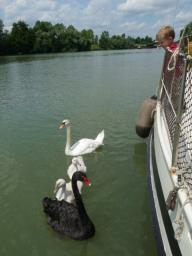
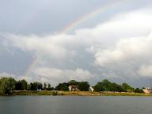
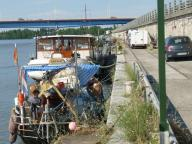

|


|
Vastgelopen
» exacte locatie
 We hebben Job aan boord en dat is maar goed ook. Het is veel ondieper
op het Rhone-Rijnkanaal dan dat het volgens het boekje zou moeten
zijn. Behalve dat we enkele keren de bodem even kort hebben aangeraakt
met onze kiel zijn we ook drie keer echt vastgelopen. De eerste keer
moesten we een touw naar een boom spannen om los te komen. De tweede
keer lukte het door het anker zwemmend uit te brengen en met de lier
de boot weer los te trekken. De laatste keer was echt lastig. Weer
brachten we het anker uit en met Job dansend op de ankerlijn en ik met
vol motorvermogen links en rechts wrikkend kwamen we na een uur los.
Een hele opluchting, want er zijn ook gevallen bekend van boten die
met een kraan uit het kanaal moeten worden getakeld.
We hebben Job aan boord en dat is maar goed ook. Het is veel ondieper
op het Rhone-Rijnkanaal dan dat het volgens het boekje zou moeten
zijn. Behalve dat we enkele keren de bodem even kort hebben aangeraakt
met onze kiel zijn we ook drie keer echt vastgelopen. De eerste keer
moesten we een touw naar een boom spannen om los te komen. De tweede
keer lukte het door het anker zwemmend uit te brengen en met de lier
de boot weer los te trekken. De laatste keer was echt lastig. Weer
brachten we het anker uit en met Job dansend op de ankerlijn en ik met
vol motorvermogen links en rechts wrikkend kwamen we na een uur los.
Een hele opluchting, want er zijn ook gevallen bekend van boten die
met een kraan uit het kanaal moeten worden getakeld.
Maar op het vastlopen na was het een leuke tocht. We hebben allerlei
verschillende landschappen gezien, we zijn door een tunnel gevaren en
Job heeft twee vissen gevangen waarvan we er eentje hebben opgegeten.
Siebe vindt het ook erg leuk om iemand anders aan boord erbij te
hebben die allemaal nieuwe spelletjes kent.
Helaas kwam aan de tocht een plotseling einde omdat de motor ernstig
water lekte. Waterpomp kapot. En de benodigde onderdelen waren hier in
de buurt nergens te krijgen. Dus hebben we drie dagen stilgelegen in
het plaatsje Montbeliard. We waren wat teleurgesteld omdat we niet
verder konden, maar van de andere kant regende het toch veel en waren
er best leuke dingen in de stad te doen. Gisteren kwamen Job=92s ouders
hem ophalen en namen meteen de onderdelen mee. De hele club is
afgelopen nacht op de boot blijven slapen. Erg gezellig, maar de
puinhoop in de boot aan het eind van een wereldreis met zeven personen
aan boord is onvoorstelbaar. Vanochtend hebben we de waterpomp
gerepareerd en is de hele familie nog even door een sluis gegaan.
Daarna zijn we met ons drieen weer verder gevaren.
|
|
|

Slootje varen
» exacte locatie
Ondertussen zijn we al een heel stuk voorbij Lyon. De afgelopen week
hebben we op de rivier de Saone gevaren. Dat gaat een stuk sneller
omdat we geen stroom tegen meer hebben. Onderweg een hoop stadjes
bekeken en elke dag verse baquettes. Huurboten komen we ook tegen.
Deze hangen vol stootwillen en gezien de vaarkunsten van de meeste
huurders zijn er ook havens waarin ze niet mogen afmeren. Ze worden
ook wel botsauto=92s genoemd. De Saone vinden we erg op de IJssel
lijken. Smal, weinig scheepvaart en een vlak landschap. Siebe vindt de
koeien erg leuk en als hij een tractor ziet zegt hij =91tractor boer=92,
dat weet hij uit een boekje en nu ziet hij het in het echt. Voor de
laatste keer deze reis heb ik het haar van beide heren bijgewerkt.
Siebe hebben we in de schaduw in z=92n stoeltje op de steiger gezet met
voor zijn neus de Teletubbies. Dat werkte erg goed. Hij heeft de
aflevering nu zelfs al zo vaak gezien dat hij er liedjes uit kan
nazingen. Regelmatig horen we briljante teksten als =91hoed na na na
hoed=92 en =91aya aya aya aya Poooo=92. Sinds de Middellandse Zee krijgen
we regelmatig bezoek van mijn moeder en haar man. Erg leuk. Soms gaan
we ook mee naar de camping en daar zag Siebe dat ze in een tent wonen
dus nu heeft hij het steeds over =91oma tent=92.
Gisteren vonden we een mooi deurtje in de Saone met een bord er boven.
Het Rhone-Rijn kanaal. In de eerste sluis kregen we een
afstandsbediening om onbemande sluizen een signaal te geven dat we er
aan komen. De deur gaat open en dan klimt een van ons de ladder op om
de boot vast te leggen. Weer terug op de boot trek je aan een stang om
de sluis aan te zetten. De ene deur sluit zich en in de andere deur
gaan de kleppen open zodat het water heel snel naar binnen stroomt.
Alles gaat vanzelf. Op deze manier hebben we gister in 12 kilometer al
9 sluizen gehad. En tussendoor vaar je op een heel smal kanaaltje, net
een sloot met erlangs een fietspad. Vanavond komt Job, de neef van
Joost, om een week mee te varen en te helpen met de sluizen. Erg fijn,
want er komen er nog een stuk of honderd.


|
|
|
Te koop: Hafskip
» exacte locatie
We hebben gezeild wat we wilden zeilen, gezien wat we wilden zien en
het is nu hoog tijd om terug te gaan naar het gewone leven. Siebe
heeft meer ruimte en vriendjes nodig en Ilse en ik willen graag weer
aan het werk. Als we toch weer eens een weekendje of weekje willen
zeilen kunnen we de platbodem van mijn ouders lenen. Er is dus
eigenlijk geen goede reden om de boot te houden. Maar we zijn erg aan
haar gehecht geraakt. Ze is vier jaar lang ons huis geweest en heeft
ons op zee in slecht weer altijd een veilig gevoel gegeven. Bovendien
is alle techniek na veel werk onderweg nu echt goed in orde. We hebben
allerlei redenen proberen te verzinnen om toch niet te verkopen. Van
een stukje grond kopen, een kuil graven en de boot daar als soort van
huis in zetten tot volledig inpakken in plastic voor onze volgende
reis over een jaar of twintig. Maar eigenlijk weten we dat het gewoon
het beste voor ons is om te verkopen. Gisteren hebben we de
advertentie op het web gezet. Voor de volgende die een droom wil laten
uitkomen.
Link: Hafskip op Botenbank
|
|
|
Lyon
» exacte locatie
's Ochtends nog even snel twee stokbroden bij de bakker halen en dan
vertrekken we uit Vienne voor de laatste etappe op de Rhone. Men
waarschuwde ons dat de stroming op dit stuk heel hard kan zijn en dat
je voor de komende dertig kilometer de hele dag moet uittrekken.
Verhalen van andere boten die met de motor voluit niet onder een
bepaalde brug door kwamen en alle openingen tussen de peilers moesten
proberen om degene te vinden waar het net ietsje minder hard
tussendoor stroomde. Maar wij blijken geluk te hebben. Er staat niet
meer stroming dan wat we op de rest van de Rhone hebben gehad. Nog een
laatste sluis en we slaan af naar de rivier de Saone die nauwelijks
stroomt. Ineens komen we rond lunchtijd al in Lyon aan. Ook hier kan
er weer fraai langs de kade in het centrum van de stad worden
afgemeerd. Helemaal veilig schijnt het alleen niet te zijn. Onze
buurman in de sluis was hier 's nachts door een stel vandalen
losgegooid en op drift geraakt op de rivier. Dat was natuurlijk net
pech hebben, maar uit voorzorg leggen we onze boot toch maar met een
ketting en slot vast aan de kade.
|
|
|
Verder de Rhone op
» exacte locatie
We zijn al een aardig eind de Rhone opgevaren en in Valence
aangekomen. Zo=92n 100 km ten zuiden van Lyon. In de laatste sluis zagen
we dat we inmiddels ruim 100 meter boven zeeniveau aan het varen zijn.
De tegenstroming valt mee maar hoe dichter je in de buurt komt van een
sluis hoe harder het stroomt. Die sluizen zijn wel spectaculair,
laatst hadden we er een die ons heel snel 20 meter omhoog liet gaan.
Moeilijk doen met touwen overpakken zoals we gewend waren in de
Nederlandse sluizen hoeft niet, want ze hebben drijvende bolders die
met je mee omhoog gaan.
Onderweg loopt Siebe heerlijk rond met zijn zwemvest aan. Ik merk echt
dat hij zo geniet van het buiten zijn. Als het =92s middags te heet is
maken we een badje voor hem. En elke dag kan hij lopen op de kant.
Hier in Valence liggen we aan een rommelige kade met woonboten. Pal in
de stad en met een prachtig park aan de deur.

|
|
|
Mast eraf
» exacte locatie
Het is een tijdje stil geweest hier op de website. Dat komt vooral
omdat er niet zoveel nieuws te vertellen is. We zijn via een aantal
plaatsjes langs de kust naar de monding van de Rhone gevaren. Veel
stokbrood gegeten en ons erover verwonderd dat bijna alle stadjes en
dorpjes hier sfeer uitstralen. Uiteindelijk komen we aan in Port St.
Louis. Onze laatste haven met zout water, want we varen binnendoor
terug naar Nederland via de Rhone en de Rijn. Hier strijken we ook de
mast. De route gaat langs ontelbaar veel bruggen en de meeste zijn
veel te laag om met staande mast onderdoor te kunnen. Het strijken
vereist veel voorbereiding en ik merk dat ik de procedure enigzins
vergeten ben in de tussentijd. Maar uiteindelijk is de hele
installatie van buizen, blokken en lijnen klaar voor gebruik. Het
daadwerkelijke strijken gaat soepel totdat ik per ongeluk de lijn die
ik langzaam vier van de lier laat glippen. Oeps! De mast komt even wat
sneller naar beneden, maar gelukkig kan ik hem door de vele blokken
redelijk makkelijk met de hand weer stoppen. Foutje, maar hij ligt.
Ilse heeft twee beren van Nederlanders gevraagd om even te helpen de
mast te verschuiven en hun spierkracht stelt niet teleur.
De volgende dag beginnen we aan de eerste tocht stroomopwaarts op de
Rhone. Heel comfortabel zo op de rivier. Geen golven, een enorme
zonnetent en veel te zien langs de kant. Siebe vermaakt zich heel goed
met kijken naar wat er zoal langs komt. 's Avonds komen we aan in
Arles en meren af langs de kade. Weer een erg fraai stadje. We
bespreken zelfs of onze volgende boot niet een stijlvolle motorboot
moet worden om de rivieren van Europa uitgebreid te verkennen. Niet
verder vertellen hoor.
|
|
|

|
|
|
|
|